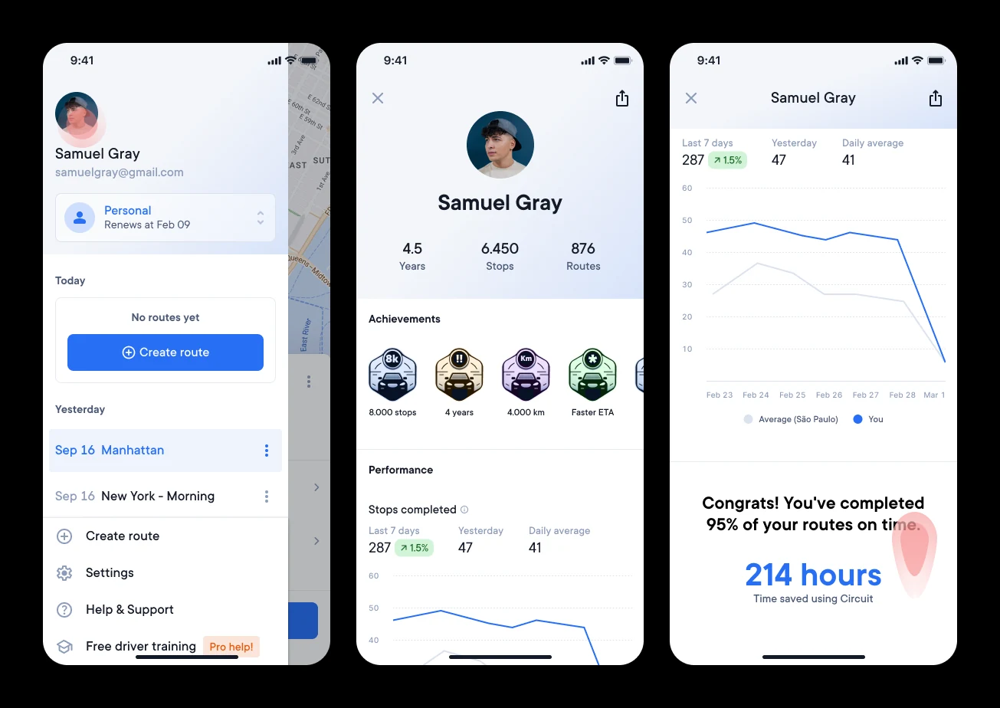
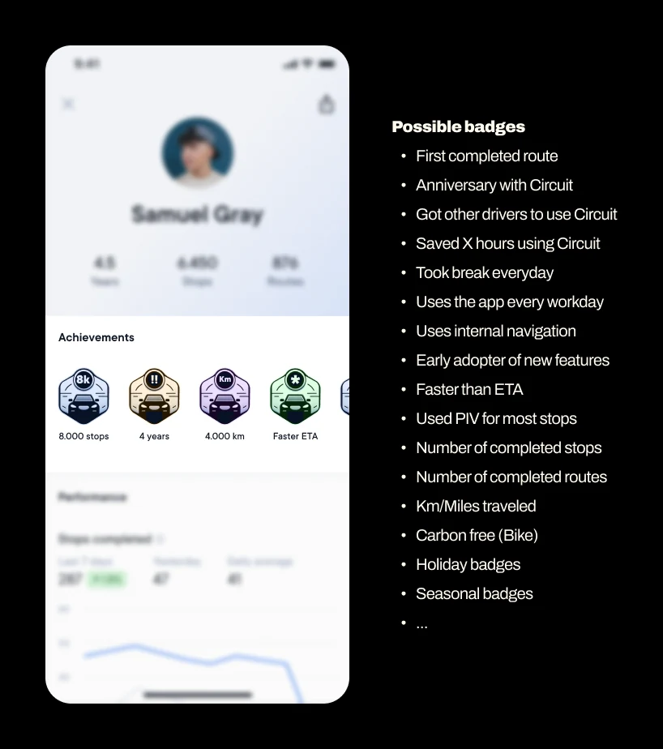
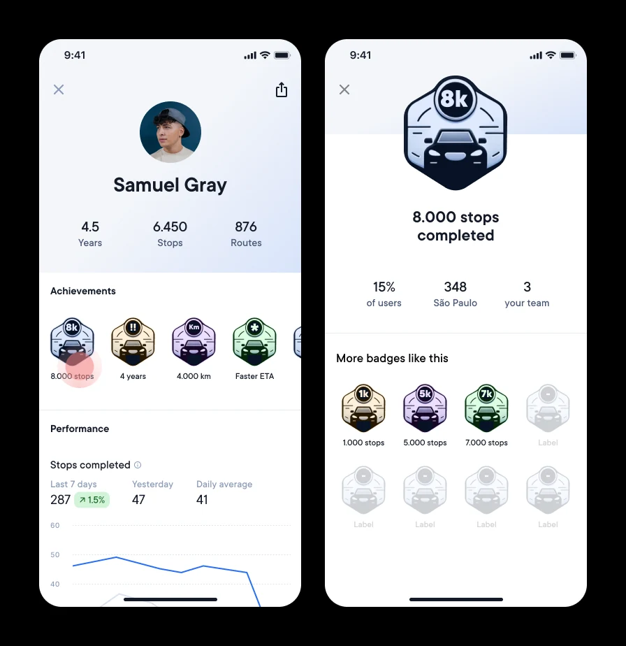
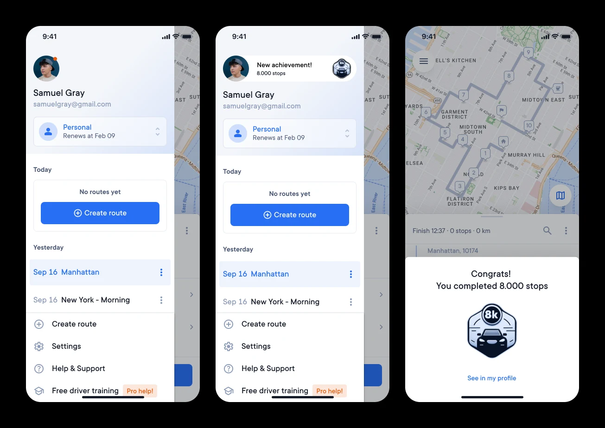
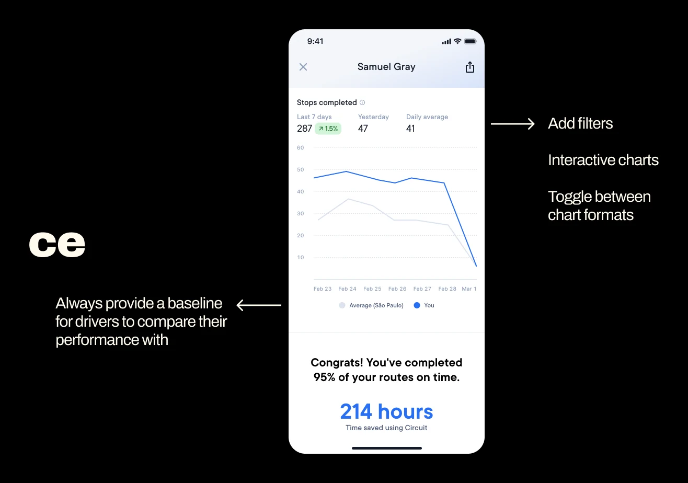
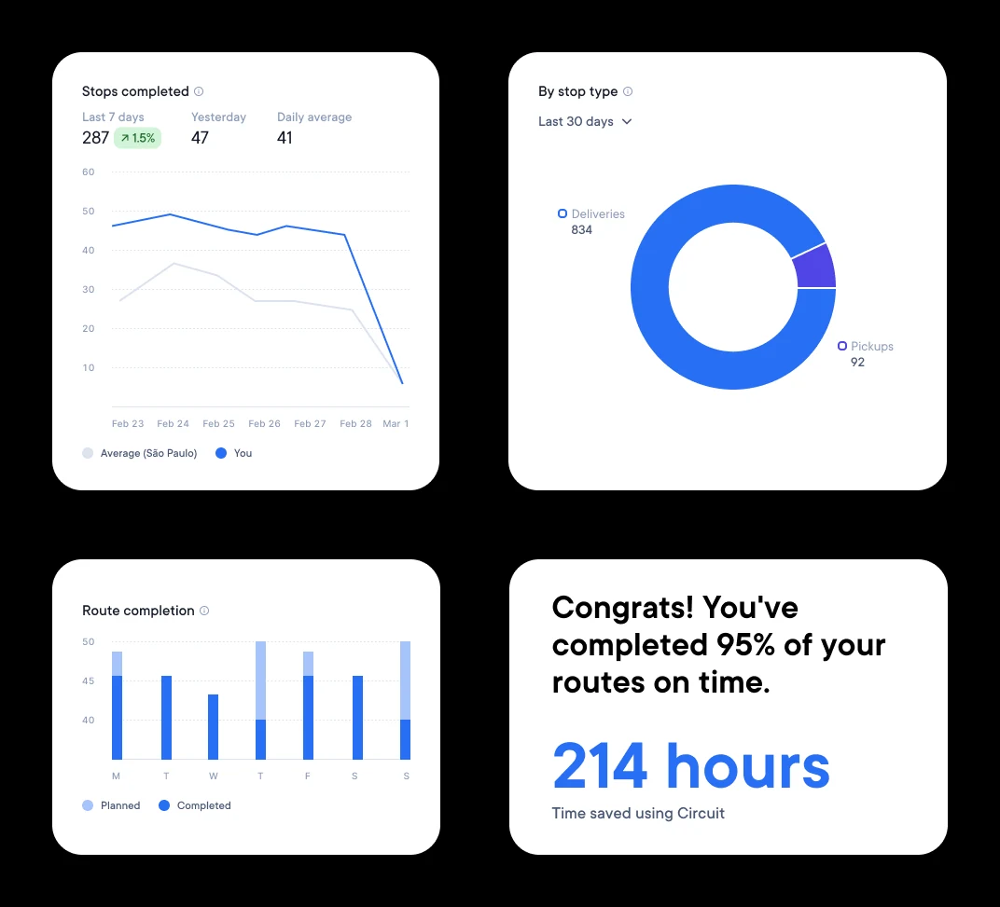
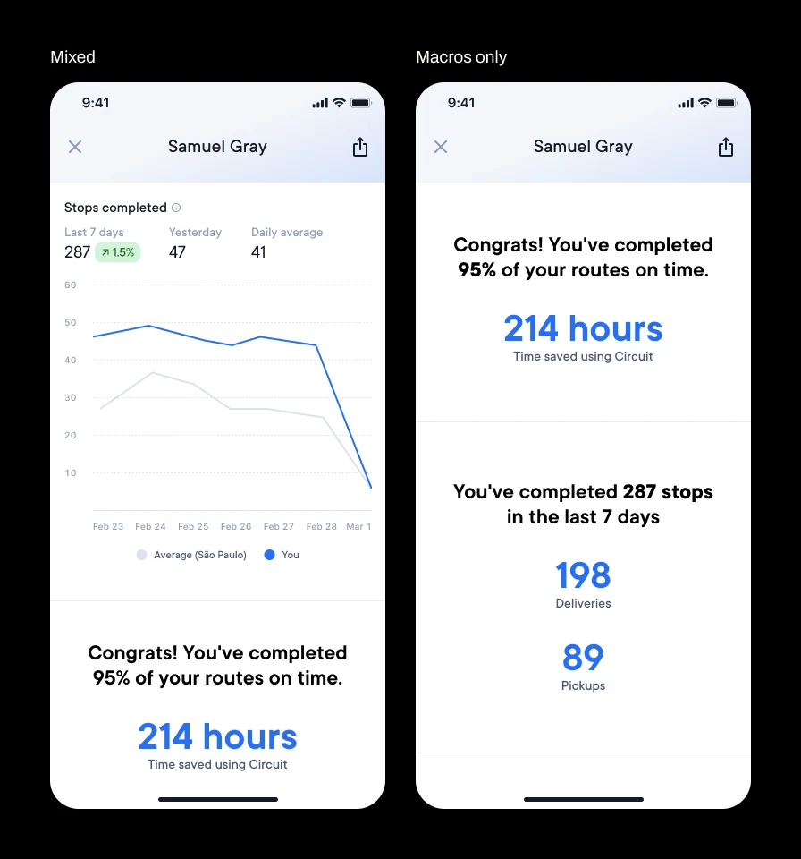
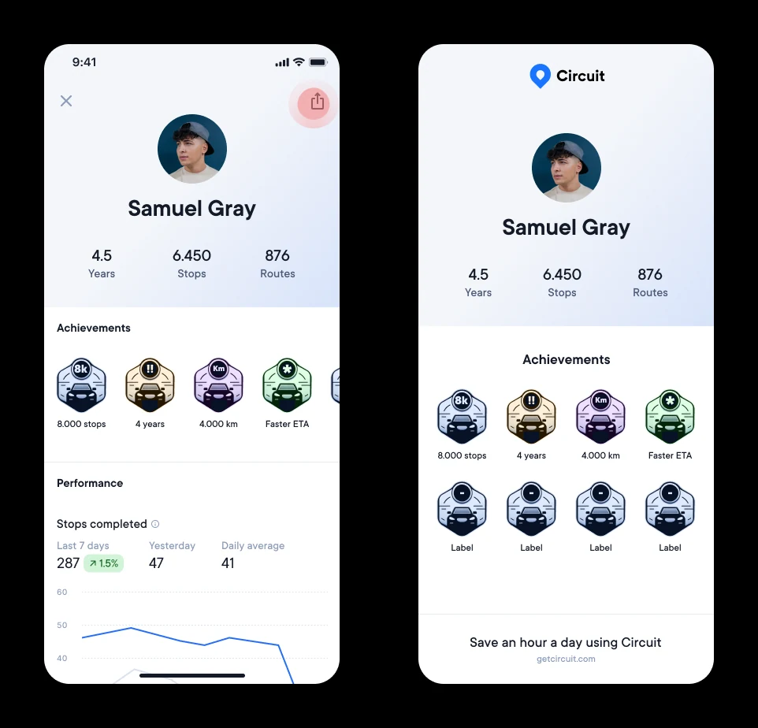
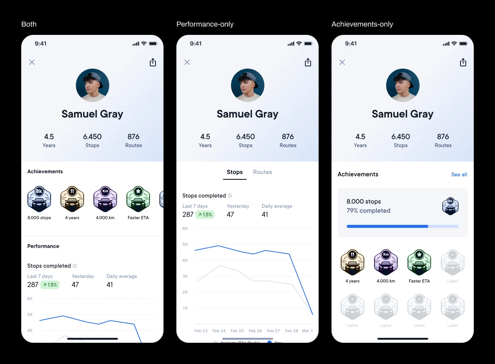

Driver Profile
Vision on how to increase retention of power users through gamification and social interactions.
Good example of a more exploratory challenge where I’ve come up with an idea and had to communicate it.
Driver Profile
A new section in the app displays driver achievements and performance data.

Hypotheses
- Create an area in the app where drivers can keep track of their performance will lay the groundwork for a marketplace (already a plan for the future of the company).
- Encouraging drivers to use features in the app to make their profile more accurate will increase adoption and retention.
- Offering something fun and informative that can be shared with peers will encourage social interactions and engagement.
Achievements
Branding team could work on custom delightful badges or Product team could work on easily replicable designs as in the example.

Badge details
A dedicated page that displays badge details, allowing users to compare with peers and explore related challenges.

Getting badges
Could be subtle, highlighted, or integrated into the flow, depending on the desired level of intrusiveness.

Performance
Always provide a baseline for drivers to compare their performance with.
Add filters, interactive charts, and toggle between chart formats.

Possible data
Useful data focusing on positive incentives, avoiding highlighting failures to make sure drivers feel good about their work.

Only macros instead of charts?
Data can be presented in a technical and analytical format or in a way that it’s easier to consume.
While both approaches have pros and cons, the editorial version is often more accessible and democratic.

Sharing
Users could share a simplified profile featuring relevant data and branded elements to enhance brand awareness.

Scope
To reduce scope, we could start with either a performance-only or achievements-only profile.
Although, including both would strengthen the overall goal.

Pitch snippet
Impact
The vision is set for when the team is ready to work on it.
It highlighted the need for more backend developers and the importance of improving our data set to provide historical data to users.